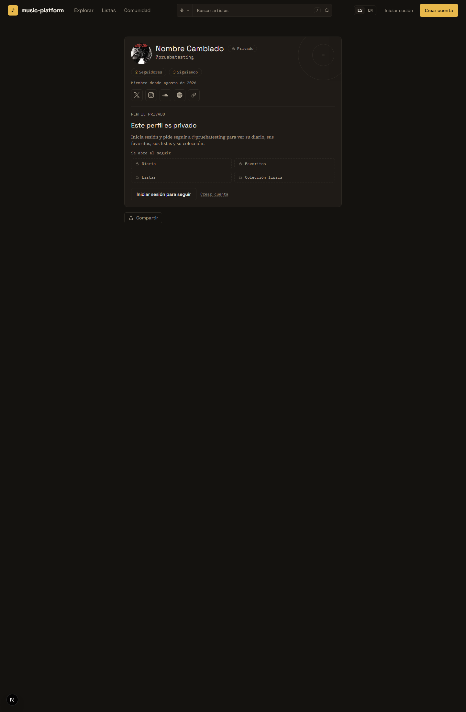
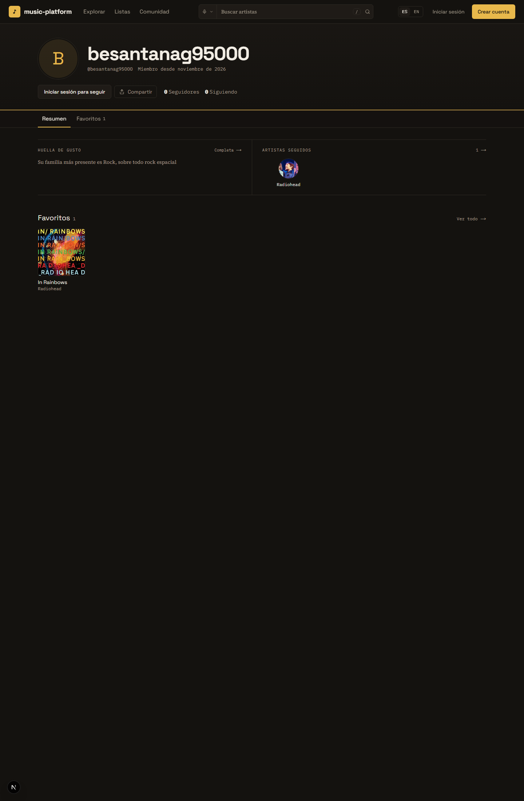
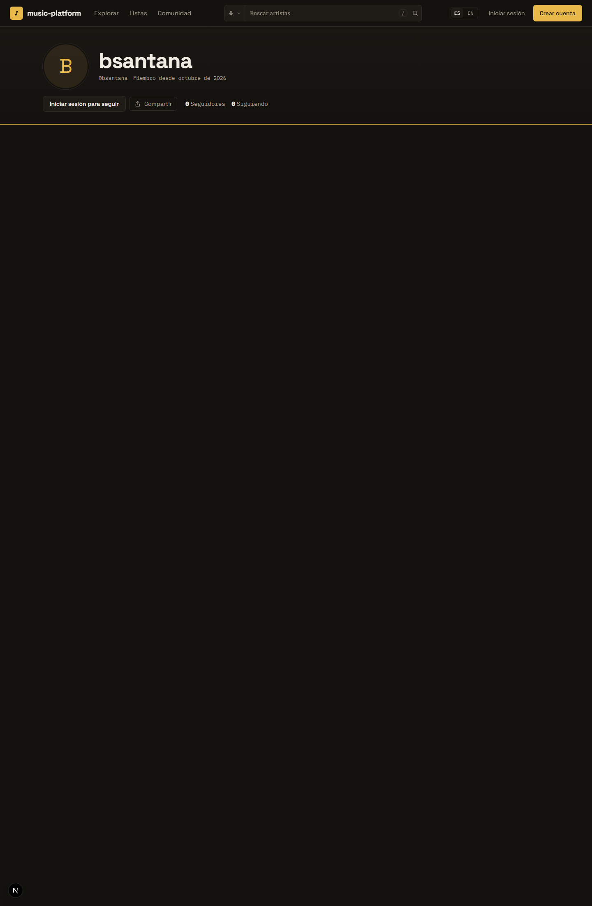
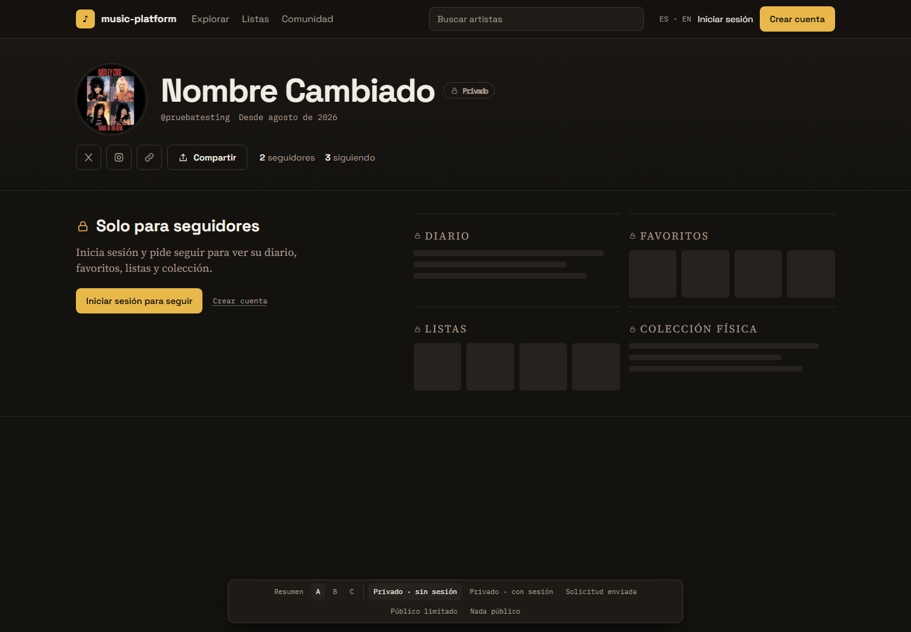
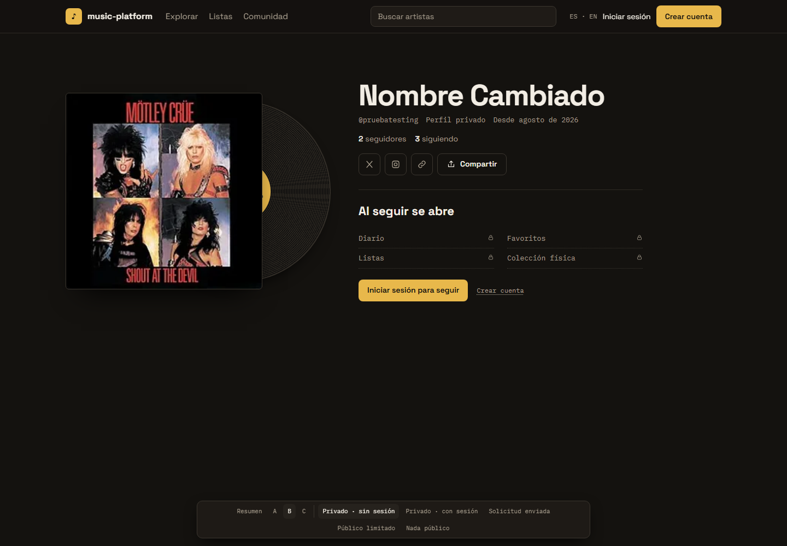
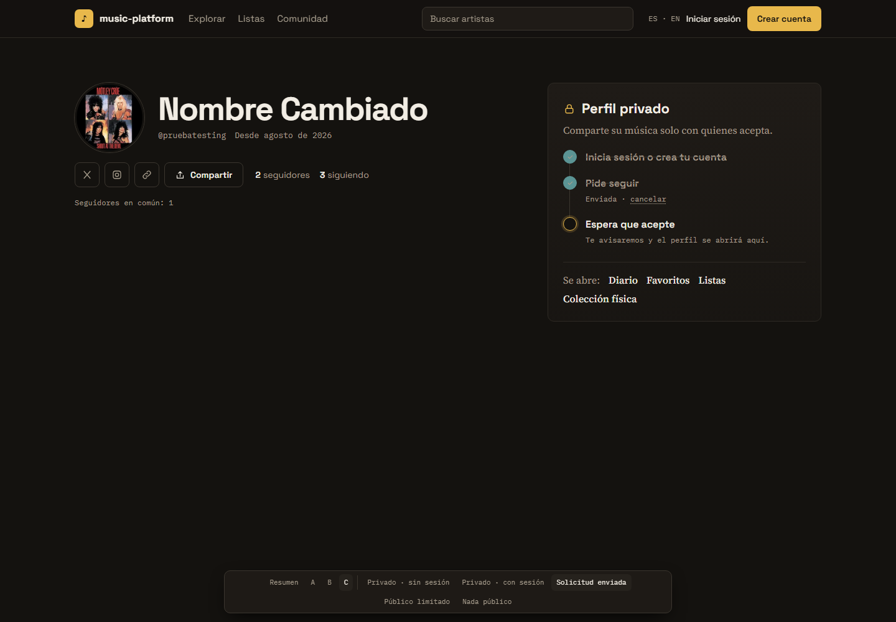

Perfil privado y perfil con contenido solo para seguidores
Auditoría sin sesión de @pruebatesting (privado), @besantanag95000 (público, con parte del diario solo para seguidores) y @bsantana (público, todo su contenido solo para seguidores), con el código desplegado tras el rediseño del perfil (Fases 1–3). Tres propuestas en el navegador, con los colores y tipografías actuales.
Cómo se ve hoy



Hallazgos
Perfil privado
- Otro lenguaje que el perfil rediseñado. Es la tarjeta de antes: 672 px, nombre de 24 px, contadores como píldoras con números ámbar. Al aprobar la solicitud, la misma persona aparece con otra cabecera (112 px de avatar, nombre de 52 px).
- La mitad de la pantalla vacía. A 1440 px la tarjeta ocupa el 47 % del ancho y todo lo demás queda en blanco.
- «Privado» tres veces. El chip «Privado», el rótulo «PERFIL PRIVADO» y el título «Este perfil es privado», más una oración larga que repite la lista de secciones que aparece justo debajo.
- Las secciones bloqueadas parecen botones deshabilitados: cuatro cajas punteadas con candado, sin la forma de lo que se abre.
- Compartir queda fuera de la tarjeta, suelto debajo, desalineado del resto de acciones.
- «Solicitud enviada» solo cambia el texto del botón: no dice qué pasa después ni que el perfil se abrirá ahí mismo.
Perfil público con contenido solo para seguidores
- Con todo solo para seguidores, la página parece rota (@bsantana): cabecera y luego un vacío, sin ninguna explicación.
- Con parte visible, nada indica que seguir abre más (@besantanag95000): la página termina tras un favorito; se pierde la razón para seguir.
- Restricción de privacidad. El diario y los favoritos de otra persona no pueden revelar si existe contenido oculto (spec
diary-visibility: «no revela si el usuario tiene entradas»). Cualquier aviso tiene que ser genérico y mostrarse igual tenga o no contenido oculto: «Si sigues a @x, verás también lo que comparte solo con sus seguidores».
Propuestas
A · Cabecera continua
La misma cabecera del perfil rediseñado, con el chip «Privado». Debajo, una franja a todo el ancho: «Solo para seguidores», una oración y la acción; a la derecha, las siluetas de Diario, Favoritos, Listas y Colección (la forma de lo que se abre, sin datos). En perfiles públicos, el aviso genérico al final y un estado vacío claro.

B · Funda cerrada
El avatar como carátula de una funda cerrada, con el vinilo asomando y la etiqueta «Privado». Al lado, quién es y «Al seguir se abre» como lista de créditos. En perfiles públicos, una funda chica «Lado B» al final con el aviso.

C · Camino a seguir
Quién es a la izquierda; a la derecha, los pasos que faltan según quien mira: iniciar sesión → pedir seguir → esperar que acepte, con el paso actual marcado. En perfiles públicos, un aviso en línea bajo la cabecera: «Estás viendo lo público».

Comparación
| A · Cabecera continua | B · Funda cerrada | C · Camino a seguir | |
|---|---|---|---|
| Continuidad con el perfil rediseñado | Total: misma cabecera; al aceptar, solo se abre la franja. | Baja: otra composición; al aceptar, cambia toda la página. | Media: misma identidad, otra columna. |
| Uso del ancho | Cabecera y franja a todo el ancho. | Centrado, deja aire a los lados. | Dos columnas equilibradas. |
| Claridad del estado | Buena; «Solicitud enviada» con «Pendiente» y «Te avisaremos». | Buena, más discreta. | La mejor: el paso actual se ve de un vistazo. |
| Texto | Mínimo: un título, una oración. | Mínimo. | Más texto (tres pasos). |
| Personalidad | Sobria (comparte la del perfil: tono y vinilo). | Alta: la funda y el vinilo cuentan «cerrado». | Funcional. |
| Perfil público limitado | Aviso al final + estado vacío. | Funda «Lado B» al final. | Aviso bajo la cabecera (repite la acción de la cabecera). |
| Costo de implementación | Bajo: reutiliza ProfileHeader. | Medio: composición nueva. | Medio: componente de pasos por estado. |
Recomendación
A · Cabecera continua, tomando de C el tratamiento de «Solicitud enviada» (decir qué pasa después). Es la que mejor continúa el rediseño del perfil, usa el ancho, elimina el texto repetido y resuelve el caso que hoy parece roto (público sin nada visible) sin revelar si hay contenido oculto. B queda como alternativa si se quiere más personalidad; su funda se podría reservar al estado vacío.
Decisiones a confirmar antes de planificar
- Aviso genérico en perfiles públicos («Si sigues a @x, verás también lo que comparte solo con sus seguidores»): mostrarlo a todo visitante que no sigue, aunque no haya nada oculto, para no revelar nada.
- Identidad musical en el perfil privado: hoy se oculta (solo nombre, bio, enlaces y contadores). Mostrarla daría razones para seguir, pero cambia lo que un perfil privado expone; las propuestas la dejan oculta.
- Siluetas de secciones: A muestra las cuatro siempre (sin datos). Mostrar solo las que tienen contenido revelaría actividad de una cuenta privada.